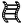
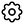

FSL Diffusion Toolbox Practical
In this practical we will walk you through the steps needed to prepare your diffusion data for analysis. We will also cover diffusion tensor model fitting and group analysis of DTI data using tract-based-spatial-statistics (TBSS).
Please refer to the FSL wiki for additional information https://fsl.fmrib.ox.ac.uk/fsl/fslwiki/FDT/UserGuide. Much of the diffusion toolbox can be run via either the command line or the FDT gui by typingFdt
(or Fdt_gui on a Mac).
Contents:
- The FDT DTI Pipeline
- The standard FSL diffusion processing pipeline
- Diffusion Data
- Familiarise yourself with diffusion data
- TOPUP - Correcting for Susceptibility-induced Distortions
- Identify EPI distortions and learn how to correct them
using
topup - EDDY - Correcting for Eddy Currents-induced Distortions
- Identify Eddy-current induced distortions and learn how to correct them
using
eddy - DTIFIT - Fitting Diffusion Tensors
- Fitting the diffusion tensor model to obtain scalar DTI maps (FA, MD) and fibre orientation information
- TBSS - Tract-Based Spatial Statistics
- Whole-brain voxelwise group statistics on DTI data
The FDT DTI Pipeline
Diffusion Data
In this first section of the practical we will familiarise ourselves with diffusion data. If you are comfortable with working with diffusion data, feel free to run through this section quickly or skip to TOPUP.
cd ~/fsl_course_data/fdt1/subj1_preproc
List this directory and you should see a set of files that are obtained
from a typical diffusion MRI acquisition.
This includes a dwidata file, as well as bvals
and bvecs that contains the information on the
diffusion-sensitising magnetic field gradients. Note that some nifti
conversion tools will create bvals and bvecs information and some will
not.
bvals contains a scalar value for each applied gradient,
corresponding to the respective b-value.
bvecs contains a 3x1
vector for each gradient, indicating the gradient direction. The entries
in bvals and bvecs are as many as the number of
volumes in the dwidata file.
So the ith volume in the data corresponds to a
measurement obtained after applying a diffusion-sensitising gradient with a
b-value given by the ith entry in bvals and a gradient
direction given by the ith vector in bvecs.
You can quickly see the contents of
these two files, by typing cat bvals and cat bvecs,
respectively.
Ensure you are comfortable with the term "shell".
Bring up fsleyes and open b1500.nii.gz - you will
need to reset the maximum display range to around 2000. This is the diffusion
data of the b=1500 shell before correction for distortions and it is a 4D
image. Turn on movie mode (). Look at
the sagittal slice and note the movement between volumes caused by eddy
current-induced distortions. The reason you see this as a "movement"
is that each volume is associated with a different diffusion gradient, and
hence different distortions. This particular subject happened to lie very
still, but in general you would also see "movement" due to actual
subject movement. Notice also the susceptibility-induced distortions at the
frontal part of inferior slices.
Turn off movie mode, hide the b1500 overlay and
open dwidata.nii.gz. Have a look through the different volumes
(different "timepoints" in the 4D data) after setting the maximum
display range to around 4000.
Now, let's have a look at all the data associated with a voxel. Choose a CSF voxel (e.g. [60, 63, 39]) and observe how the signal changes with gradient direction. To do that choose from the menu View > Time series. A new window will appear with a plot of the signal intensity at the chosen location for the different diffusion-weighted volumes. Notice the few high intensity values and the very low intensities in most of the datapoints. The former correspond to the b=0 images. The latter to diffusion-weighted images, for which maximal attenuation of the CSF signal has occurred.
Notice that the higher the b-value, the lower the signal. Can you identify
time points that correspond to the three shells used in this acquisition?
In the CSF most of the signal has already disappeared at a b-value of 1500,
so you may need to pick a voxel in grey matter to see the difference between
the b=1500 and the b=2500 shells.
Check that you are right by inspecting the bvals file (cat bvals).
Changing plot colours
In order to see the plots for the different voxels in
different colours you need to set the colours explicitly for each plot.
After you have pressed the (+) button you should see an entry appear
in the plot list (If it doesn't appear you may have to resize the
fsleyes window slightly). The entry will have a colour button
that you can press in order to change the colour of that particular plot.
Now, add to the plot the timeseries for a white matter voxel. To do that use the (+) button on the plot and choose a voxel in the corpus callosum (e.g. [57, 59, 44]). Can you tell and explain the differences in the data? Use (+) again and now choose a grey matter cortical voxel (e.g. [79, 52, 47]). Can you explain the differences?
Look again at the images. For volumes with diffusion gradients applied, see if you can work out the
direction of the gradient. Remember that diffusion data appear darker in
places where there is more diffusion along the gradient direction. You should be
able to work out the gradient direction by looking at a diffusion weighted image,
and comparing darker areas with your knowledge of white matter orientation.
Pick an area of the brain where you know what direction the fibres go in, for
example voxel [54 41 33], and see how the signal changes from volume to volume.
If you find it difficult to assess the direction because it is confunded by
different b-values you can chose instead to look at the b1500.nii.gz image where all the signal variation is due to direction.
You can check if you are right - e.g for diffusion encoding
direction for volume 4 (the fifth volume), type:
awk '{print $5}' bvecs
awk starts from 1 ! The
awk command is extracting the 5th vector from the bvec file, which contains
the normalized vectors giving the gradient directions in x, y and z.
b1500.nii.gz image you need to replace bvecs in the command above with b1500.bvec
Diffusion MRI registration.
Typically the b=0 image or the FA image is used to register diffusion MRI data (i.e. to a structural scan or across subjects). Can you understand why this is? Why do we not use diffusion-weighted images?
TOPUP - Correcting for Susceptibility-induced Distortions
FSL wiki: https://fsl.fmrib.ox.ac.uk/fsl/fslwiki/topup
cd ~/fsl_course_data/fdt1/subj1_preproc
A minimum requirement for using topup for correcting
distortions is that two spin-echo (SE) EPI images with different PE-directions
have been acquired. The best is to acquire them with opposing PE-directions
(i.e. A→P AND P→A or L→R AND R→L). An SE-EPI image is the
same as a b=0 image acquired as a part of a diffusion protocol.
Just as for fieldmaps this pair must be acquired at the same occasion as the
full diffusion protocol and the subject must not leave the scanner in between
and no re-shimming can be done.
Identifying susceptibility-induced distortions
From the dwidata choose a volume without diffusion
weighting
(e.g. the first volume). You can now extract this as a standalone 3D
image,
using fslroi. Figure out this command by yourself. Typing fslroi
into the terminal will produce instructions on how to use fslroi. Call
the extracted file nodif.
*Reveal command
Open nodif in
FSLeyes and have a look at different slices. Notice that as you go to more
inferior slices, the frontal part of the brain starts to appear distorted
(e.g. "squashed" or "elongated"). These distortions are
always present in EPI images and are caused by differences in the magnetic
susceptibilities of the areas being imaged.
Now open and superimpose in FSLeyes the image nodif_PA. This
is an image without diffusion-weighting (i.e. b=0) of the same subject that
has been acquired with the opposite PE direction
(Posterior→Anterior). Switch on and off the visibility of this image to
see how the distortions change sign between nodif
and nodif_PA. Regions that are squashed in the first appear
elongated in the second and vice versa. Unsurprisingly the areas that were
very obviously distorted when viewed in the nodif image changes a
lot as you switch back and forth between nodif
and nodif_PA. Perhaps more disturbing is that some areas that
didn't appear obviously distorted do too, meaning that these are also
distorted, only not quite so obvious. For example look at the Cerebellum in a
sagittal view at ~x=58 as you switch back and forth. We will correct these
distortions by combining the two b=0 images using the TOPUP tool. We will then
pass the results on to the EDDY tool where it will be applied to the
correction of all diffusion data.
Running topup
First you need to merge the AP and PA images into a single image using fslmerge. Again, typing fslmerge into the command line will bring up helpful instructions. Merge the files along the 4th 'timeseries' axis. Call the merged image AP_PA_b0.
*Reveal command
Then create a text file that contains the information with the PE
direction, the sign of the AP and PA volumes and some timing information
obtained by the acquisition. This file has already been created
(acqparams.txt), and is a text-file that contains
0 -1 0 0.0759 0 1 0 0.0759
The first three elements of each line comprise a vector that specifies the
direction of the phase encoding. The non-zero number in the second column
means that is along the y-direction. A -1 means that k-space was
traversed Anterior→Posterior and a 1 that it was traversed
Posterior→Anterior. The final column specifies the "total readout
time", which is the time (in seconds) between the collection of the
centre of the first echo and the centre of the last echo. In the FAQ section
of the online help for topup there are instructions for how to
find this information for Siemens scanners. Don't worry if you can't find the
"total readout time" for your own data: you can almost always use 0.05.
The file should contain as many entries as there are volumes in the image
file that is passed to topup.
We are now ready to run topup which we would do with the command:
topup --imain=AP_PA_b0 \
--datain=acqparams.txt \
--config=b02b0.cnf \
--out=topup_AP_PA_b0 \
--iout=topup_AP_PA_b0_iout \
--fout=topup_AP_PA_b0_fout
Apply topup
applytopup can be used to apply the field calculated
by topup to one or more different image volumes, thereby correcting the
susceptibility distortions in those images. For example, we could use it to inspect
how well topup managed to correct our b0 data by running:
applytopup --imain=nodif,nodif_PA \
--topup=topup_AP_PA_b0 \
--datain=acqparams.txt \
--inindex=1,2 \
--out=hifi_nodif
This will generate a file named hifi_nodif.nii.gz where both
input images have been combined into a single distortion-corrected image.
However, this will take too long to run so instead copy the "pre-baked" results into your working directory with:
cp pre_baked/topup_AP_PA_b0* .
There are four result files. topup_AP_PA_b0_fieldcoef.nii.gz
contains information about the off-resonance field and
topup_AP_PA_b0_movpar.txt specifies any movement
between nodif and nodif_PA. Open FSLeyes and
load topup_AP_PA_b0_fieldcoef.nii.gz.
It looks like a low resolution fieldmap, and it contains the spline
coefficients for the field that TOPUP has
estimated. Close FSLeyes and re-open it, but this time
take a look at the actual field (topup_AP_PA_b0_fout).
Moreover, to check that TOPUP has done its job properly, load
topup_AP_PA_b0_iout and compare its two volumes to those we
provided as input (AP_PA_b0.nii.gz).
EDDY - Correcting for Eddy Currents
FSL wiki: https://fsl.fmrib.ox.ac.uk/fsl/fslwiki/eddy
We will first generate a brain mask using the corrected b0. We compute the average image of the corrected b0 volumes using fslmaths. Figure out the correct command, calling the output file hifi_nodif.
*Reveal command
And then we use BET on the averaged b0. Again figure out the command and call the output file hifi_nodif_brain. Hint: create a binary brain mask, with a fraction intensity threshold of 0.2.
*Reveal command
You can then use FSLeyes to ensure that bet has done a good
job.
Running EDDY
Now we would typically run eddy, either through the FDT gui
(by typing Fdt or Fdt_gui on a Mac),
or with the command:
eddy --imain=dwidata \
--mask=hifi_nodif_brain_mask \
--index=index.txt \
--acqp=acqparams.txt \
--bvecs=bvecs \
--bvals=bvals \
--fwhm=0 \
--topup=topup_AP_PA_b0 \
--flm=quadratic \
--out=eddy_unwarped_images \
--data_is_shelled
In this command:
dwidatais the full diffusion data (including b=0 volumes), all acquired with a Anterior→Posterior phase-encoding.- The text-file
index.txtcontains a column of ones, one for each volume indwidata, specifying that all volume were acquired with the parameters specified by the first row inacqparams.txt. topup_AP_PA_b0was the name given as the--outparameter when we rantopupand will causeeddyto look for the filestopup_AP_PA_b0_fieldcoef.nii.gzandtopup_AP_PA_b0_movpar.txt.- The parameters
--fwhm=0and--flm=quadraticspecify that no smoothing should be applied to the data and that we assume a quadratic model for the EC-fields. These are our current recommendations and you are unlikely to ever have to use any other settings. - Lastly, the
--data_is_shelledflag is set to avoid the automatic checking on whether the data has been acquired using a multi-shell protocol (we already know that is indeed the case for this dataset).
As eddy performs a simultaneous registration of all volumes in
the data set it is quite memory and CPU hungry. Therefore copy the
pre-calculated results into your working directory with:
cp pre_baked/eddy_unwarped_images* .
You will find that eddy has produced three output
files: eddy_unwarped_images.nii.gz,
eddy_unwarped_images.rotated_bvecs
and eddy_unwarped_images.eddy_parameters. The former of those is
the "main result" and contains the data in dwidata
corrected for susceptibility, eddy currents and subject movements.
We suggest that you load both b1500.nii.gz and
eddy_unwarped_images_b1500.nii.gz into FSLeyes (N.B. eddy_unwarped_images_b1500.nii.gz was not generated automatically by eddy, but was created using the select_dwi_vols command on the eddy otput).
Set the maximum
display range for both images to around 2000, make sure that the chain link
icon ( ) is turned on for both overlays in the
Overlay List panel, then turn on movie mode
(). The chain link option will
group the display settings for the two selected images. By toggling the
visibility of the top data set you can see the difference before and
after
) is turned on for both overlays in the
Overlay List panel, then turn on movie mode
(). The chain link option will
group the display settings for the two selected images. By toggling the
visibility of the top data set you can see the difference before and
after eddy.
Data acquisition requirements for eddy (optional)
*Read this either if you will be acquiring data on which you hope to run eddy, or if you want to to solidify your knowledge.
A note on quality control: EDDY QC
As we have seen, dMRI data can be affected by many hardware or subject-specific artefacts. If undetected, these artefacts can bias downstream analysis. Quality control is therefore very important - always look at your data! In large population studies, manual quality control may not be practical. A new FSL tool EDDY QC provides automatic quality control at both the single subject and group level. For more info see
FSL wiki: https://fsl.fmrib.ox.ac.uk/fsl/fslwiki/eddyqc .
DTIFIT - fitting diffusion tensors
cd ~/fsl_course_data/fdt1/subj1
The directory already contains bvals, bvecs,
distortion-corrected data file named data and a brain mask named
nodif_brain_mask. These are the four files that a standard FDT
directory should be comprised of, before running dtifit or any
further data analysis. The files are a sub-set of the data we have been
working on so far, comprising only b=0 and b=1500 volumes. Here we select a single shell
as the tensor is not a good model for multi-shell data.
select_dwi_vols is the tool to extract volumes with specific b-values from a
4D diffusion-weighted dataset. For example:
select_dwi_vols \
eddy_unwarped_images.nii.gz \
bvals \
dti_data \
0 \
-b 1500 \
-obv eddy_unwarped_images.eddy_rotated_bvecs
This command will create a new 4D file containg only those volumes with b-values ~=0 and ~=1500. It will also
generate two new bvals and
bvecs files containing only the selected b-values and b-vectors.
You can run DTIFIT (the FSL diffusion tensor fitting program) in one of three ways, all described below. Choose one of these approaches:
1: Run DTIFIT on a FDT directory
Open the FDT GUI by typing Fdt
(or Fdt_gui on a Mac), and select
DTIFIT from the main menu (the button in the top that initially
says PROBTRACKX).
You can run DTIFIT on a standard FDT directory by selecting the input
directory (subj1 - go up one directory in the file browser to be
able to select this) and then pressing Go. NB: When DTIFIT has finished
running via the GUI, a small dialogue window will pop up saying Done!
You must press Ok to close this window before closing the main FDT GUI
otherwise you will recieve an error message (beware: this dialogue can pop up
in a completely different and unexpected part of the screen).
2: Run DTIFIT by manually specifying the input files
Open the FDT GUI by typing Fdt
(or Fdt_gui on a Mac), and select
DTIFIT from the main menu (the button in the top that initially
says PROBTRACKX).
You can select the input files manually by clicking Specify input files manually, then select the following files for the relevant tabs:
- Diffusion weighted data:
data - BET binary brain mask:
nodif_brain_mask - Output basename:
dti - Gradient directions:
bvecs - b values:
bvals
When you have entered all of the file name, press Go.
3: Call dtifit from the command line. Try to figure out this command yourself. Name the output files dti.
*Reveal command
DTI output
When you have run dtifit using any of these three ways,
load the anisotropy map dti_FA into FSLeyes
Add the principal eigenvector map to your display: File -> Add from file -> dti_V1
FSLeyes should open the image as a 3-direction vector image
(RGB). Diffusion direction is now coded by colour. For a more interpretable image,
we can modulate the colour intensity with the FA map so anisotropic
voxels appear bright. In the display panel () change the Modulate by setting
to dti_FA. You may wish to adjust the brightness and contrast
settings.
Change the Modulate by setting back to None, and then change the Overlay data type to 3-direction vector image (Line). Zoom in and out of your data. You should see clear white matter pathways through the vector field.
Finally, change the Overlay data type to 3D/4D volume. The image should now look quite messy - you are looking at the first (X) component (the first volume) of the vector in each voxel. The second and third volumes contain the Y and Z components of the vector.
Now load the Mean Diffusivity map (dti_MD) and the map of
the first eigenvalue (dti_L1) into
FSLeyes. Change the minimum/maximum display range values to 0 and 0.002
respectively for both images.
Compare the values of MD and L1 in CSF, white and gray matter.
*What should I look at?
Next, load the secondary eigenvalue dti_L2 and see how L2 is lower in the white matter. Try also dti_L3. The
contrast between white and gray matter is even larger, with much lower values
being observed in the former. In contrast, L1, L2 and L3 do not vary that much
in the gray matter (or in the CSF). These differences between L1, L2 and L3
give rise to diffusion anisotropy and lead to high FA values in the white
matter and low FA in the gray matter. Keep in mind the diffusion tensor
ellipsoid for a pictorial representation of the DTI eigenvalues.
We also have files named dti_V2 and dti_V3. What are these?
*Answer
Visualising the tensor in fsleyes (optional)
In addition to displaying the principal eigenvector (dti_V1)
of the tensor model fit, FSLeyes has the ability to display the full tensor
model fit in each voxel. To do this, choose File -> Add from
directory and select the subj1 directory. Bring up the
overlay display panel () and increase
the tensor size and ellipsoid quality to improve visualization. You can now
see the whole tensor elliposid colour-coded according to its PDD. In the
overlay display panel, you can also choose to colour the ellipsoid using one
of the loaded scalar maps (e.g., FA). Do that and select Colour Map ->
Hot. It is now easier to see which white matter areas are more
anisotropic than others and how this gets reflected by the shape of the tensor
ellipsoid.
TBSS - Tract-Based Spatial Statistics
FSLwiki: https://fsl.fmrib.ox.ac.uk/fsl/fslwiki/TBSS.
So far, we have stepped through the steps required to pre-process a typical diffusion-weighted data. The final part of the tutorial focusses on running TBSS to compare FA values between two groups of participants.
We will now run a TBSS analysis of a small dataset - 3 young people (mean age 25) and 3 older people (mean age 65). We will attempt to find where on the tract skeleton the two groups of subjects have significantly different FA.
1. Creating FA data from a diffusion study
We have already created the FA images from the 6 subjects, using dtifit.
cd ~/fsl_course_data/fdt1/tbss
Remember that all of the main scripts (until you reach the
randomise stage near the end) need to be run from within this
directory.
LOOK AT YOUR DATA
- Open one image with FSleyes to get a feel for the raw data quality and resolution. You may need to adjust the intensity display range. Look at the image histogram (View -> Histogram).
- Run
slicesdir *.nii.gzand open the resulting web page report; this is a quick-and-dirty way of checking through all the original images.
2. Preparing your FA data for TBSS
We must first run an additional pre-processing script which will erode your FA images slightly to remove brain-edge artifacts and zero the end slices (again to remove likely outliers from the diffusion tensor fitting). Type:
tbss_1_preproc *.nii.gz
The script places its output in a newly-created sub-directory called
FA. It will also create a sub-directory called
origdata and place all your original images in there for
posterity.
LOOK AT YOUR DATA
Check the images created in the FA directory. The tbss_1_preproc script will have re-run
slicesdir on the preprocessed FA maps - open this report
(you can find it in FA/slicesdir/index.html) and compare it
to the slicesdirreport you created earlier.
3. Registering all the FA data
The next TBSS script runs the nonlinear registration, aligning all the FA
data across subjects. The recommended approach is to align every FA image to
the FMRIB58_FA template. This process can take a long time, as each
registration takes around 10 minutes. You can easily speed this up if you have
multiple computers running cluster software such as SGE (Sun Grid Engine). To
save time, we have pre-computed all the alignments for you, so instead of
running the TBSS script tbss_2_reg, make sure you are still in
the directory one level above FA, and run:
cp precomputed_registration/* FA
This puts the necessary registration output files into FA, as if you had run the registration yourself.
4. Post-registration processing
Before reading this section, start the next script running so that you can read what's going on while it runs (it will take about 5 minutes):
tbss_3_postreg -S
The previous script (tbss_2_reg - we ran this for you) only
got as far as registering all subjects to the chosen
template. The tbss_3_postreg script applies these registrations
to take all subjects into 1x1x1mm standard space.
The script then merged all of the subjects' standard space nonlinearly aligned images
into a single 4D image file called all_FA, created in a new
subdirectory called stats. The mean of all FA images is created,
called mean_FA, and this is then fed into the FA skeletonisation
program to create mean_FA_skeleton.
Once the script has finished running, check that the mean FA image looks reasonable, and is well aligned with the MNI152 image:
cd stats fsleyes -std1mm mean_FA -cm red-yellow -dr 0.2 0.6 &
As you move around in the image you should see that the mean FA image is
indeed well aligned to standard space and corresponds to white matter in the
MNI152 image. Remove these images (Overlay -> Remove all),
then open the aligned FA maps for all subjects and the mean FA
skeleton (File -> Add from file, and
select all_FA and mean_FA_skeleton). Change the
colour map for mean_FA_skeleton to Green, and the
display range to 0.2 - 0.6.
Select all_FA and turn on the movie loop
(); you will see the mean FA skeleton
on top of each different subject's aligned FA image. If all the processing so
far has worked, the skeleton should look like the examples shown in the
lecture. If the registration has worked well you should see that in general
each subject's major tracts are reasonably well aligned to the relevant parts
of the skeleton.
What happens if we set the skeleton threshold lower than 0.2? To do this in FSLeyes, change the lower of the display range settings.
*Answer
5. Projecting all pre-aligned FA data onto the skeleton
The last TBSS script carries out the final steps necessary before you run the voxelwise cross-subject stats. It thresholds the mean FA skeleton image at the chosen threshold:
If you're still in the stats directory:
cd ..
Then:
tbss_4_prestats 0.3
This takes 4-5 minutes to run; read the rest of this section while it's running (if you can't make much sense of it, don't worry - it's described in more detail in the paper!).
The thresholding creates a binary skeleton mask that defines the set of voxels used in all subsequent processing.
Next a "distance map" is created from the skeleton mask. This is used in the projection of each subject's FA onto the skeleton; when searching outwards from a skeleton voxel for the local tract centre, the search only continues while the distance map values keep increasing - this means that the search knows to stop when it has got more than halfway between the starting skeleton point and another separate part of the skeleton.
Finally, the script takes the 4D pre-aligned FA images in
all_FA and, for each "timepoint" (subject ID), projects
the FA data onto the mean FA skeleton. This results in a 4D image file
containing the (projected) skeletonised FA data. It is this file that you will
feed into voxelwise statistics in the next section.
Once the script has finished, cd into
stats and have a look at all_FA_skeletonised in
FSLeyes - turn on movie mode to see the different timepoints of the
skeletonised data.
6. Voxelwise statistics on the skeletonised FA data
The previous step resulted in the 4D skeletonised FA image. It is this that you now feed into voxelwise statistics, that, for example, tells you which FA skeleton voxels are significantly different between two groups of subjects.
The recommended way of doing the stats is to use the randomise
tool. For more detail see
the Randomise
manual. Before running randomise you will need to generate
design matrix and contrast files (e.g., design.mat
and design.con). We will use the Glm GUI to generate
these. Note that the order of the entries (rows) in your design matrix
must match the alphabetical order of your original FA images, as that
determines the order of the aligned FA images in the final 4D
file all_FA_skeletonised. In this case the order was: 3 young
subjects and then 3 older subjects. Start the GUI:
cd stats Glm
Change Timeseries design to Higher-level / non-timeseries
design. Change the # inputs to 6 (you may have to press the enter
key after typing in 6) and then use the Wizard to setup
the Two-groups, unpaired t-test with 3 as the Number of subjects
in first group (Note that the order of the subjects will be important in
this design). Reduce the number of contrasts to 2 (we're not interested in the
group means on their own). Finally, save the design as
filename design, and in the terminal use less to
look at the design.mat and design.con files.
You are now ready to run the stats. Because this reduced dataset only contains 6 subjects, only 20 distinct permutations are possible, so by default randomise will run just these 20. Again, because this tiny dataset has so few subjects the raw t-stat values will not be very significant - so let's try setting a cluster-forming t threshold of 1.5 (in "real" datasets we would normally recommend using the --T2 option for TFCE instead of cluster-based thresholding):
randomise -i all_FA_skeletonised -o tbss \ -m mean_FA_skeleton_mask -d design.mat -t design.con -c 1.5
Contrast 1 gives the young>older test. The raw unthresholded tstat image
is tbss_tstat1 and the corresponding (p-values corrected for
multiple comparisons) cluster image
is tbss_clustere_corrp_tstat1.
Thresholding clusters at 0.95 (corresponding to thresholding the p-values at 0.05, because randomise outputs p-values as 1-p for convenience of display - so that higher values are more significant) shows a few areas of reduced FA in the older subjects. The following shows unthresholded t-stats in red-yellow and thresholded clusters in blue:
fsleyes -std1mm mean_FA_skeleton -cm green -dr .3 .7 \ tbss_tstat1 -cm red-yellow -dr 1.5 3 \ tbss_clustere_corrp_tstat1 -cm blue-lightblue -dr 0.949 1 &
Look at the histogram of tstat1; it is clearly shifted to the
right, suggesting a global decrease in FA with aging (you may need to change
the number of histogram bins to see this easily).
*Displaying "fattened" results
The End.